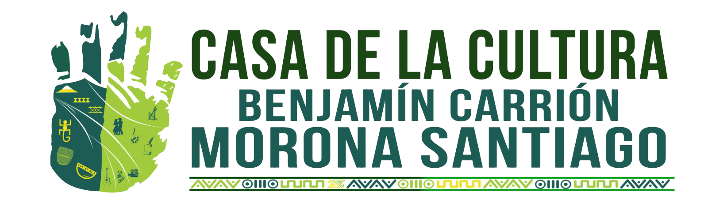

Morona Santiago
IDENTIDAD Y PERTENENCIA

La mano de un gigante emerge de la selva profunda
para recordar quiénes somos: herederos de una memoria milenaria,
guardianes de una naturaleza indomable y testigos de una resiliencia eterna.
56 páginas a todo color que recorren:
símbolos y territorio •
patrimonio vivo •
arte y memoria •
ecos de la tierra •
patriotismo que une alegría y tristeza
PDF • ~15 MB • Edición especial – Casa de la Cultura Ecuatoriana